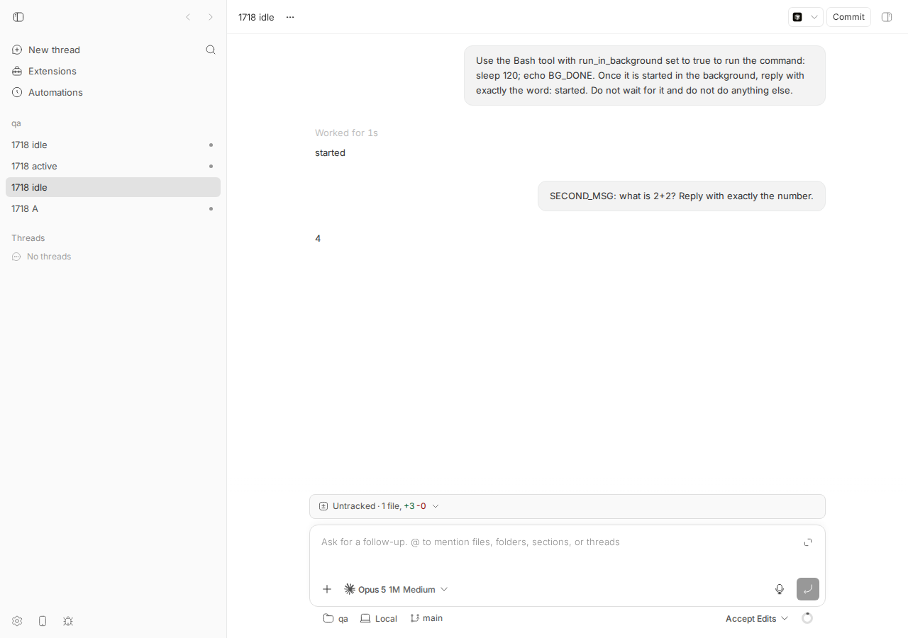
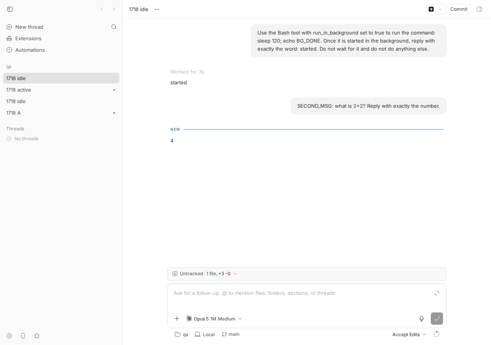

#1718 · claude-code: user message sent after stopping a thread with backgrounded work is dropped
TL;DR
Plain-language framing. A bb thread run by the claude-code provider is a Claude Code CLI process driven through the Claude Agent SDK. Claude can start a shell command "in the background" (run_in_background); such a task belongs to the CLI process, not to bb. bb thread stop closes that CLI process (bb waits at most 4 s and then aborts it, which is what happens while a background task is alive). The next message reopens the conversation with the SDK's resume and pushes the new prompt right away. bb groups everything a provider emits into turns: the user's accepted message (turn/input/accepted) is attached to the first turn that opens after it, and the provider's terminal result message closes the turn.
What happens. Claude Code CLI 2.1.234 does something new on resume when the previous process died with a background shell task still running: at startup it synthesises a <task-notification status=stopped> ("No completion record was found for this background shell command from the previous session…"), commits it to the transcript without calling the model, and emits a result message with num_turns: 0, zero usage and origin: { kind: "task-notification" } — before it processes the prompt bb just pushed. bb's translator (event-translation.ts#L1365, via resolveProviderTerminalTurn introduced by #1432) sees "a result arrived and a user message is pending" and opens-and-immediately-closes the user's turn: turn/started → turn/input/accepted → tokenUsage(0) → turn/completed, no items. The thread reads idle, bb thread wait --status idle returns, and one to five seconds later the model's real answer arrives in a turn that has no user input attached ("unsolicited"). The model does see the new prompt (in 3/3 of my runs it answered it correctly); the message is not lost at the provider, but from bb's point of view the request settled empty and the answer belongs to nothing — which is what waiters, parent threads and the reporter observed. Whether the model then answers the previous question or the new one is up to the model (the "stopped" notification sits in its context right before the new prompt).
Regression status. Reproduces 3/3 against base 16ceb3a54 with the CLI stopped while idle (release) and while active (interrupt), plus a bb-free reproduction driving the Agent SDK directly. It is not a #1640 regression: the translation is the same code that #1640 moved from packages/agent-runtime/src/claude-code/translate-message.ts. It is a regression from #1432 (2026-08-13, "Settle provider prompts that complete without starting a turn", fixes #1431), whose zero-work settlement is what consumes the pending user message on this result. Not fixed on origin/main (a108fa7ef) as of today.
Claims vs findings
| Claim | Status | Evidence |
|---|---|---|
Message sent after stopping a thread with backgrounded work produces an empty turn (turn/started → input/accepted → turn/completed, 0 tokens, no items) | Verified | Seq 20–23 of thr_gmgcn5kqjd (run "idle") and seq 24–27 of thr_wieshz9ii2 (run "active"): exactly that sequence, with thread/tokenUsage/updated total 0. See Minimal reproduction. |
| A later unsolicited turn arrives | Verified | Seq 24–31 (idle run): turn/started for a new turn id with no turn/input/accepted, carrying the assistant reply, 1–5 s after the empty turn. |
| The unsolicited turn "answered the previous question, not the new message" | Not reproduced as such | In all my runs the answer addressed the new prompt ("second"/"4"). The model's context contains the synthesized stopped notification immediately before the new prompt, so answering the old question is plausible model behaviour, but it is not what makes the turn empty. bb's turn structure is broken either way. |
| Likely provider-level (claude-code background-task interaction) | Verified, with a bb half | The trigger is CLI behaviour on resume (bb-free SDK script shows the extra result num_turns=0 origin=task-notification). The consequence is bb's: resolveProviderTerminalTurn settles the pending user message on that result. |
| Not reproduced against pre-#1640 main; may be a #1640 regression | Refuted (pre-existing) | #1640 moved the result handling byte-for-byte from translate-message.ts; the consuming logic was added by #1432 on 2026-08-13 (diff shows the old guard if (state.currentTurnId) replaced by resolveProviderTerminalTurn). Before #1432 the empty result was ignored and the answer would have drained the pending input correctly. |
Where to look: stop/interrupt handling and session resume in plugins/provider-claude-code/src/bridge/ | Partly | Stop is fine (it is what orphans the task, by design: closeGracefully 4 s then abort). The bug is in src/event-translation.ts (result → turn resolution), not in the bridge lifecycle. |
Environment
- bb
16ceb3a54(main, base commit), worktree/home/USER/projects/bb/.claude/worktrees/wf_242c3e11-a10-7; dev instance app:12709, server:20709, host daemon:28709, data dir/home/USER/.bb-dev/projects-bb-.claude-worktrees-wf_242c3e11-a10-7-e6d29a2dcff7. - Linux 7.0.0-29-generic, node v24.18.0, Claude Code CLI
2.1.234,@anthropic-ai/claude-agent-sdk0.3.197 (the version pinned byplugins/provider-claude-code). Model in bb runs: the defaultclaude-opus-5[1m]; in the SDK script:claude-sonnet-4-5. - Project
proj_wajvahc5ha(local path/tmp/1718-qa, hosthost_qjr6dszb9v). Threads:thr_kbtzibr84e(manual first run),thr_gmgcn5kqjd(script, idle),thr_wieshz9ii2(script, active),thr_uhjh8vbtdd(script, idle, with proposed fix). - CLI wrapper:
1718/repro/1718-bb.sh(BB_REPO=<your worktree>; evaluatesscripts/bb-dev-app env). Event dump:1718-events.sh.
Minimal reproduction
A. End to end through bb (script)
- Build and start your dev instance once:
pnpm install --frozen-lockfile --prefer-offline && pnpm exec turbo run build && scripts/bb-dev-app current.claudemust be logged in on the machine. - Create a scratch git repo and a project:
mkdir -p /tmp/1718-qa && git -C /tmp/1718-qa init;curl -s -X POST $BB_SERVER_URL/api/v1/projects -H 'content-type: application/json' -d '{"name":"qa","source":{"type":"local_path","path":"/tmp/1718-qa","hostId":"<id from bb machine list>"}}'. - Run
1718/repro/1718-repro.sh:BB_REPO=<worktree> ./1718-repro.sh <project id> idle(oractive). It spawns a claude-code thread whose prompt backgroundssleep 120, waits until the thread is idle (background task still running), runsbb thread stop, sendsSECOND_MSG: what is 2+2? …, runsbb thread wait --status idle, and dumps the events twice (right when idle, and 25 s later).
Expected: one new turn owning SECOND_MSG, its answer, and turn/completed; bb thread wait --status idle returns after the answer. Actual (1718-repro-idle.out, thread thr_gmgcn5kqjd): the user's turn bt7391c9c4-4-1 is opened and closed empty at 07:23:55 (wait returns here); the answer "4" arrives at 07:23:56 in turn bt7391c9c4-4-2 with no turn/input/accepted.
--- spawning claude-code thread (idle)
thread=thr_gmgcn5kqjd
--- waiting for the thread to go idle (background task still running)
status before stop: idle
--- 07:23:46 bb thread stop
Thread thr_gmgcn5kqjd stopped
--- 07:23:51 bb thread tell (the message this issue is about)
Thread thr_gmgcn5kqjd steered
--- 07:23:52 bb thread wait --status idle
--- 07:23:55 thread idle again. Events so far:
16 07:23:45 turn/completed bt7391c9c4-3-1 {"providerThreadId":"44da9de7-22fe-4611-bd59-949d630883b2","status":"completed","providerCheckpointId":"5bfef0
17 07:23:51 item/backgroundTask/completed {"providerThreadId":"44da9de7-22fe-4611-bd59-949d630883b2","item":{"type":"backgroundTask","id":"task:bkt5q8md
18 07:23:52 client/turn/requested {"direction":"outbound","requestId":"creq_tq2gb4pkd2","source":"tell","initiator":"user","senderThreadId":null
19 07:23:52 thread/identity {"providerThreadId":"44da9de7-22fe-4611-bd59-949d630883b2"}
20 07:23:55 turn/started bt7391c9c4-4-1 {"providerThreadId":"44da9de7-22fe-4611-bd59-949d630883b2"}
21 07:23:55 turn/input/accepted bt7391c9c4-4-1 {"providerThreadId":"44da9de7-22fe-4611-bd59-949d630883b2","clientRequestId":"creq_tq2gb4pkd2"}
22 07:23:55 thread/tokenUsage/updated bt7391c9c4-4-1 {"providerThreadId":"44da9de7-22fe-4611-bd59-949d630883b2","tokenUsage":{"total":{"totalTokens":0,"inputTokens
23 07:23:55 turn/completed bt7391c9c4-4-1 {"providerThreadId":"44da9de7-22fe-4611-bd59-949d630883b2","status":"completed"}
24 07:23:56 turn/started bt7391c9c4-4-2 {"providerThreadId":"44da9de7-22fe-4611-bd59-949d630883b2"}
25 07:23:56 item/started bt7391c9c4-4-2 {"providerThreadId":"44da9de7-22fe-4611-bd59-949d630883b2","item":{"type":"agentMessage","id":"bt7391c9c4-4-as
26 07:23:56 item/agentMessage/delta bt7391c9c4-4-2 {"providerThreadId":"44da9de7-22fe-4611-bd59-949d630883b2","itemId":"bt7391c9c4-4-assistant-1","delta":"4"}
27 07:23:56 item/completed bt7391c9c4-4-2 {"providerThreadId":"44da9de7-22fe-4611-bd59-949d630883b2","item":{"type":"agentMessage","id":"bt7391c9c4-4-as
28 07:23:56 provider/rateLimits/updated {"providerThreadId":"44da9de7-22fe-4611-bd59-949d630883b2","rateLimits":{"providerId":"claude-code","status":"
29 07:23:56 thread/contextWindowUsage/updated bt7391c9c4-4-2 {"providerThreadId":"44da9de7-22fe-4611-bd59-949d630883b2","contextWindowUsage":{"usedTokens":29536,"modelCont
30 07:23:56 thread/tokenUsage/updated bt7391c9c4-4-2 {"providerThreadId":"44da9de7-22fe-4611-bd59-949d630883b2","tokenUsage":{"total":{"totalTokens":29539,"inputTo
31 07:23:56 turn/completed bt7391c9c4-4-2 {"providerThreadId":"44da9de7-22fe-4611-bd59-949d630883b2","status":"completed","providerCheckpointId":"d4ec02
Same shape when the thread is active at stop time (interrupt): 1718-repro-active.out, thread thr_wieshz9ii2, empty turn bt7391c9c4-6-1 at 07:24:51, unsolicited answer turn bt7391c9c4-6-2 at 07:24:56 (5 s of "idle" in between).
18 07:24:44 system/thread/interrupted {"reason":"manual-stop"}
19 07:24:44 turn/completed bt7391c9c4-5-1 {"providerThreadId":"7e1e95da-b197-43a8-81ef-b661c21f1a8b","status":"interrupted"}
20 07:24:44 item/backgroundTask/completed {"providerThreadId":"7e1e95da-b197-43a8-81ef-b661c21f1a8b","item":{"type":"backgroundTask","id":"task:b1nw7w71
21 07:24:44 item/backgroundTask/completed {"providerThreadId":"7e1e95da-b197-43a8-81ef-b661c21f1a8b","item":{"type":"backgroundTask","id":"task:bvi02ntc
22 07:24:48 client/turn/requested {"direction":"outbound","requestId":"creq_k32tzjmq9d","source":"tell","initiator":"user","senderThreadId":null
23 07:24:48 thread/identity {"providerThreadId":"7e1e95da-b197-43a8-81ef-b661c21f1a8b"}
24 07:24:51 turn/started bt7391c9c4-6-1 {"providerThreadId":"7e1e95da-b197-43a8-81ef-b661c21f1a8b"}
25 07:24:51 turn/input/accepted bt7391c9c4-6-1 {"providerThreadId":"7e1e95da-b197-43a8-81ef-b661c21f1a8b","clientRequestId":"creq_k32tzjmq9d"}
26 07:24:51 thread/tokenUsage/updated bt7391c9c4-6-1 {"providerThreadId":"7e1e95da-b197-43a8-81ef-b661c21f1a8b","tokenUsage":{"total":{"totalTokens":0,"inputTokens
27 07:24:51 turn/completed bt7391c9c4-6-1 {"providerThreadId":"7e1e95da-b197-43a8-81ef-b661c21f1a8b","status":"completed"}
28 07:24:56 turn/started bt7391c9c4-6-2 {"providerThreadId":"7e1e95da-b197-43a8-81ef-b661c21f1a8b"}
…
39 07:24:56 turn/completed bt7391c9c4-6-2 status completed

thr_gmgcn5kqjd after the bug run. Note there is nothing to see after the fact: the timeline renders the user message and the later "4" as if they were one exchange. The damage is in the turn structure (the request settled empty and idle a second before the answer), which is what waiters, parent threads and the reporter's event dump observe — this is not a rendering bug.B. What Claude Code itself emits on resume (no bb)
1718/repro/1718-sdk-resume.mjs drives the Agent SDK exactly like the bridge (streaming input, persistSession, resume). Phase 1 backgrounds sleep 120, ends the input stream on result and aborts after 4 s (= SdkSession.closeGracefully). Phase 2 resumes the same session id and pushes one prompt. Run it from the plugin dir so the SDK resolves: cd plugins/provider-claude-code && cp /tmp/bb-reports/issues/1718/repro/1718-sdk-resume.mjs . && node ./1718-sdk-resume.mjs. Output (1718-sdk-resume.out, thinking_tokens lines removed):
cwd: /tmp/1718-sdk-B0s74h model: claude-sonnet-4-5
[phase1] 07:20:10.630 system/hook_started
[phase1] 07:20:10.636 system/hook_response
[phase1] 07:20:10.680 system/init
[phase1] 07:20:10.680 system/status
[phase1] 07:20:15.232 assistant [{}]
[phase1] 07:20:15.284 assistant [{"tool_use":"Bash"}]
[phase1] 07:20:15.318 rate_limit_event
[phase1] 07:20:15.408 system/task_started {"type":"system","subtype":"task_started","task_id":"bwne9754n","tool_use_id":"toolu_01ALJZ3sZyNEEoSzVwmEGqZi","description":"Sleep 120 seconds then print message","task_type":"local_bash","uuid":"245
[phase1] 07:20:15.414 user(echo) [{"tool_use_id":"toolu_01ALJZ3sZyNEEoSzVwmEGqZi","type":"tool_result","content":"Command running in background with ID: bwne9754n. Output is being written to: /tmp/claude-1000/-tmp-1718-sdk-B0s74h/87cb0d52-08b5-4a05-aab9
[phase1] 07:20:15.421 system/status
[phase1] 07:20:17.075 assistant [{"text":"started"}]
[phase1] 07:20:17.117 RESULT subtype=success num_turns=2 usage={"input_tokens":15,"cache_creation_input_tokens":10793,"cache_read_input_tokens":37995,"output_tokens":217,"server_tool_use":{"web_search_requests":0,"web_fetch_requests":0},"service_tier":"standard","cache_creation":{"ephemeral_1h_input_tokens":10793,"ephemeral_5m_input_tokens":0},"inference_geo":"not_available","iterations":[{"input_tokens":5,"output_tokens":4,"cache_read_input_tokens":20999,"cache_creation_input_tokens":3418,"cache_creation":{"ephemeral_5m_input_tokens":0,"ephemeral_1h_input_tokens":3418},"type":"message"}],"speed":"standard"} result="started"
[phase1] session: 87cb0d52-08b5-4a05-aab9-3e86e74abbb1 -> resuming in 3s
[phase2] 07:20:26.404 system/hook_started
[phase2] 07:20:26.411 system/hook_response
[phase2] 07:20:26.411 system/task_notification {"type":"system","subtype":"task_notification","task_id":"bwne9754n","tool_use_id":"toolu_01ALJZ3sZyNEEoSzVwmEGqZi","status":"stopped","output_file":"","summary":"No completion record was found for th
[phase2] 07:20:26.411 system/task_notification {"type":"system","subtype":"task_notification","task_id":"bwne9754n","tool_use_id":"toolu_01ALJZ3sZyNEEoSzVwmEGqZi","status":"stopped","output_file":"","summary":"No completion record was found for th
[phase2] 07:20:26.463 system/init
[phase2] 07:20:26.463 RESULT subtype=success num_turns=0 usage={"input_tokens":0,"cache_creation_input_tokens":0,"cache_read_input_tokens":0,"output_tokens":0,"server_tool_use":{"web_search_requests":0,"web_fetch_requests":0},"service_tier":"standard","cache_creation":{"ephemeral_1h_input_tokens":0,"ephemeral_5m_input_tokens":0},"inference_geo":"","iterations":[],"speed":"standard"} result=""
[phase2] 07:20:26.472 system/init
[phase2] 07:20:26.472 system/status
[phase2] 07:20:28.455 assistant [{}]
[phase2] 07:20:28.479 assistant [{"text":"second"}]
[phase2] 07:20:28.888 rate_limit_event
[phase2] 07:20:28.890 RESULT subtype=success num_turns=1 usage={"input_tokens":10,"cache_creation_input_tokens":388,"cache_read_input_tokens":24371,"output_tokens":40,"server_tool_use":{"web_search_requests":0,"web_fetch_requests":0},"service_tier":"standard","cache_creation":{"ephemeral_1h_input_tokens":388,"ephemeral_5m_input_tokens":0},"inference_geo":"not_available","iterations":[{"input_tokens":10,"output_tokens":40,"cache_read_input_tokens":24371,"cache_creation_input_tokens":388,"cache_creation":{"ephemeral_5m_input_tokens":0,"ephemeral_1h_input_tokens":388},"type":"message"}],"speed":"standard"} result="second"
[phase2] total result messages: 2
Two results for one prompt. The first (07:20:26.463) has num_turns=0, zero usage, empty result, arrives 50 ms after startup, right after two system/task_notification status=stopped and the first system/init; a second system/init then opens the loop that answers the prompt. Raw JSON of both results (1718-sdk-resume-raw.out) — the discriminator is origin:
{"type":"result","subtype":"success","is_error":false,"duration_ms":35,"duration_api_ms":0,"num_turns":0,"result":"","stop_reason":null,
"session_id":"2564d7f4-…","total_cost_usd":0,"usage":{"input_tokens":0,"cache_creation_input_tokens":0,"cache_read_input_tokens":0,"output_tokens":0,…},
"modelUsage":{},"permission_denials":[],"fast_mode_state":"off","origin":{"kind":"task-notification"},"uuid":"f1d5e34c-…"}
{"type":"result","subtype":"success","is_error":false,"api_error_status":null,"duration_ms":2515,"duration_api_ms":2507,…,"num_turns":1,"result":"second","stop_reason":"end_turn",…} ← no origin
Controls: without a background task the resumed session emits exactly one result (control-nobg.out, "total result messages: 1"). Pushing the prompt 8 s after resume (delayed-push.out) shows the empty result is emitted at startup regardless of the prompt (07:21:42.004, prompt pushed at 07:21:49): it is the CLI settling the orphaned task, not a reply to anything. The CLI's own transcript for the bb thread (transcript summary) shows the synthesized notification committed as a user message with origin.kind = task-notification at 07:18:33.586, then SECOND_MSG at 33.595, then one assistant reply.
C. Unit-level repro (fails on main)
File: 1718/repro/issue-1718-resume-task-notification-result.test.ts. Copy to plugins/provider-claude-code/src/ and run cd plugins/provider-claude-code && pnpm exec vitest run src/issue-1718-resume-task-notification-result.test.ts. It replays the captured messages into the translator: a queued accepted user message, system/task_notification(stopped), system/init, then the origin: task-notification result. First assertion that fails on main: the result produces ['turn/started','turn/input/accepted','thread/tokenUsage/updated','turn/completed'] — the user's turn is settled empty. Second test fails because the answer then lands in turn-2 without the accepted input (1718-unit-test-main.out).
import { describe, expect, it } from "vitest";
import { turnScope } from "@bb/domain";
import { queueAcceptedUserMessage } from "@bb/provider-bridge-protocol/bridge-kit";
import { createClaudeEventTranslator } from "./event-translation.js";
/**
* Issue #1718: message sent after stopping a claude-code thread that had a
* backgrounded shell command is "dropped" (empty turn), and the answer arrives
* as a later unsolicited turn.
*
* Captured from Claude Code 2.1.234 / Agent SDK 0.3.197 (see
* 1718-sdk-resume-raw.out): when a session is resumed and its previous process
* left a background shell task without a completion record, the CLI first
* synthesises a `<task-notification status=stopped>` and settles it with a
* `result` carrying `num_turns: 0`, zero usage and
* `origin: { kind: "task-notification" }` BEFORE it processes the prompt that
* bb pushed at resume time. The translator's terminal-turn resolution
* (#1432) sees "result + pending accepted input" and opens-and-closes the
* user's turn with no items; the real answer then opens an unsolicited turn.
*
* Copy to plugins/provider-claude-code/src/ and run:
* cd plugins/provider-claude-code && pnpm exec vitest run src/issue-1718-resume-task-notification-result.test.ts
* On main (16ceb3a54) the first `it` FAILS: `events` contains
* turn/started, turn/input/accepted, turn/completed for "turn-1".
*/
function createTranslator() {
return createClaudeEventTranslator({
providerId: "claude-code",
turnIdPrefix: "turn-",
itemIdPrefix: "claude-",
synthesizeItemStarted: true,
});
}
const SESSION = "e9136ce3-165c-4784-b75f-60397f1c5cca";
// Verbatim shape from the SDK (fields trimmed to what matters).
const RESUME_TASK_NOTIFICATION_RESULT = {
type: "result",
subtype: "success",
is_error: false,
duration_ms: 35,
duration_api_ms: 0,
num_turns: 0,
result: "",
stop_reason: null,
session_id: SESSION,
total_cost_usd: 0,
usage: {
input_tokens: 0,
cache_creation_input_tokens: 0,
cache_read_input_tokens: 0,
output_tokens: 0,
},
modelUsage: {},
permission_denials: [],
origin: { kind: "task-notification" },
uuid: "f1d5e34c-3d97-4914-92d5-172da8e3a47f",
};
describe("issue #1718: resumed session settles an orphaned background task before the user's prompt", () => {
it("does not open and close the user's pending turn on the task-notification result", () => {
const { translateClaudeEvent, turnState } = createTranslator();
// The bridge accepted turn/start for the prompt pushed at resume time.
queueAcceptedUserMessage({
clientRequestId: "creq_ke44su93nd",
state: turnState.getOrCreate({ threadId: "bb-thread-1" }),
});
// CLI startup on resume: SessionStart hook, task_notification(stopped), init.
translateClaudeEvent(
{
type: "system",
subtype: "task_notification",
task_id: "bahu2x1mc",
tool_use_id: "toolu_017fZN7BHHxb6Aqepjgs3vxo",
status: "stopped",
output_file: "",
summary: "No completion record was found for this background shell command from the previous session.",
session_id: SESSION,
},
{ threadId: "bb-thread-1" },
);
translateClaudeEvent(
{ type: "system", subtype: "init", session_id: SESSION },
{ threadId: "bb-thread-1" },
);
const events = translateClaudeEvent(RESUME_TASK_NOTIFICATION_RESULT, {
threadId: "bb-thread-1",
});
// The user's prompt has not been processed yet: its accepted input must
// stay pending and no turn may be settled on its behalf.
expect(events.map((event) => event.type)).not.toContain("turn/completed");
expect(events.map((event) => event.type)).not.toContain(
"turn/input/accepted",
);
expect(
turnState.getOrCreate({ threadId: "bb-thread-1" })
.pendingAcceptedUserMessages,
).toHaveLength(1);
});
it("correlates the eventual answer with the user's accepted input", () => {
const { translateClaudeEvent, turnState } = createTranslator();
queueAcceptedUserMessage({
clientRequestId: "creq_ke44su93nd",
state: turnState.getOrCreate({ threadId: "bb-thread-1" }),
});
translateClaudeEvent(RESUME_TASK_NOTIFICATION_RESULT, {
threadId: "bb-thread-1",
});
const answer = translateClaudeEvent(
{
type: "assistant",
message: {
id: "msg-1",
role: "assistant",
content: [{ type: "text", text: "second" }],
},
session_id: SESSION,
},
{ threadId: "bb-thread-1" },
);
const done = translateClaudeEvent(
{
type: "result",
subtype: "success",
is_error: false,
num_turns: 1,
result: "second",
session_id: SESSION,
usage: { input_tokens: 10, output_tokens: 39 },
},
{ threadId: "bb-thread-1" },
);
// One turn ("turn-1") owns the accepted input, the answer, and completion.
expect(answer).toContainEqual(
expect.objectContaining({
type: "turn/input/accepted",
scope: turnScope("turn-1"),
clientRequestId: "creq_ke44su93nd",
}),
);
expect(answer).toContainEqual(
expect.objectContaining({
type: "item/completed",
scope: turnScope("turn-1"),
item: expect.objectContaining({ type: "agentMessage", text: "second" }),
}),
);
expect(done).toContainEqual(
expect.objectContaining({
type: "turn/completed",
scope: turnScope("turn-1"),
status: "completed",
}),
);
});
});
RUN v4.1.1 /home/USER/projects/bb/.claude/worktrees/wf_242c3e11-a10-7/plugins/provider-claude-code
❯ bb-plugin-provider-claude-code src/issue-1718-resume-task-notification-result.test.ts (2 tests | 2 failed) 14ms
× does not open and close the user's pending turn on the task-notification result 10ms
× correlates the eventual answer with the user's accepted input 3ms
⎯⎯⎯⎯⎯⎯⎯ Failed Tests 2 ⎯⎯⎯⎯⎯⎯⎯
FAIL bb-plugin-provider-claude-code src/issue-1718-resume-task-notification-result.test.ts > issue #1718: resumed session settles an orphaned background task before the user's prompt > does not open and close the user's pending turn on the task-notification result
AssertionError: expected [ 'turn/started', …(3) ] to not include 'turn/completed'
❯ src/issue-1718-resume-task-notification-result.test.ts:95:51
93| // The user's prompt has not been processed yet: its accepted inpu…
94| // stay pending and no turn may be settled on its behalf.
95| expect(events.map((event) => event.type)).not.toContain("turn/comp…
| ^
Root cause
1. bb's stop orphans the CLI's background task (by design). thread/stop in the bridge closes the SDK session with closeGracefully(THREAD_STOP_CLOSE_TIMEOUT_MS = 4000) (bridge.ts#L399, bridge.ts#L1341; sdk-session.ts#L336-L366): it ends the input stream and, if the CLI has not exited after 4 s (it does not while a background shell task is alive — bb thread stop took 5 s in every run), aborts the process. Claude Code therefore has a task_started in its transcript with no completion record. Backgrounded shell commands deliberately do not hold the bb turn open (task-translation.ts#L102-L116), so the thread is idle while the task runs and a stop is a "release"; an interrupt during an active turn ends the same way.
2. Claude Code settles orphaned tasks on resume with a zero-work result. The next message makes the runtime thread/resume + turn/start; the bridge starts a new SDK session with resume: providerThreadId and queues the prompt in the same tick (runTurnStart), and emitCanonicalTurnInputAccepted queues the accepted user message in translator state because no turn is open yet (bridge.ts#L731-L757). Claude Code 2.1.234, on resume, enqueues a synthetic <task-notification status=stopped> for the orphaned task, records it as a user message (no model call), and emits result { num_turns: 0, usage: 0, origin: { kind: "task-notification" } } before opening the loop for the real prompt (section B).
3. The translator settles the pending user turn on that result. event-translation.ts#L1355-L1372 calls resolveProviderTerminalTurn, which returns state.currentTurnId ?? (pendingAcceptedUserMessages.length > 0 ? ensureTurnStarted(…) : undefined) (provider-terminal-turn.ts#L23-L34). With the user's message pending, it opens a turn (emitting turn/started and draining turn/input/accepted) and the same handler then pushes thread/tokenUsage/updated (zeros) and turn/completed (event-translation.ts#L1436-L1456). That is the empty turn. When the model's answer streams in, ensureTurnStarted finds no pending input and opens a fresh, unsolicited turn.
// event-translation.ts (base) — the result handler cannot tell "the CLI closed its own
// task-notification loop" from "the CLI finished the user's prompt without work" (#1431):
const message = parsedMessage.data;
const turnId = resolveProviderTerminalTurn({ events, registry: args.turnState, state, threadId });
if (turnId) {
…
events.push({ type: "turn/completed", threadId, providerThreadId: "", scope: turnScope(turnId), status: failed ? "failed" : "completed", … });
args.turnState.finishTurn({ state, threadId: stateKey });
}
Why the visible symptom follows. The server applies turn/completed: the thread flips to idle, waiters (bb thread wait, parent-thread completion notifications, queued-message drain) fire with a turn that has zero items and zero tokens, and the answer that follows is a turn nobody asked for. In the reporter's run the model additionally chose to talk about the previous task (the stopped notification is the last thing in its context before the new prompt), which made it look like the new message was ignored.
History. The consuming behaviour was introduced by #1432 (7c3d1ab76, 2026-08-13) which replaced if (state.currentTurnId) with resolveProviderTerminalTurn so that a locally handled /clear (bare success result, no activity) settles its turn instead of leaving the thread active forever (#1431). #1640 later moved the code verbatim into the plugin. The other ingredient (the CLI's orphaned-task settlement on resume) is CLI behaviour whose introduction date I cannot pin down; it exists in 2.1.234.
Deeper issue. Any resume of a claude-code session whose previous process died with a background shell task alive — not only bb thread stop: daemon restart, plugin update retiring the bridge, machine reboot, session replacement after construction-scoped settings change — will hit this on the next message. Side observation: the empty turn also emits thread/tokenUsage/updated with all-zero totals (seq 22/26 above), because token totals are per SDK session state.
Proposed fix (first principles)
The SDK already tells us whose loop a result closes: SDKResultSuccess.origin?: SDKMessageOrigin ("Absent or human means keyboard input from the user"; { kind: "task-notification" } for background-task reinvocations, sdk.d.ts of 0.3.197). A task-notification result can never be the settlement of accepted user input, so it must not open a turn on behalf of pending input; it may still complete a turn that is already open (a live-session background task reinvoking the model, whose assistant messages opened an unsolicited turn). Diff against base: 1718/repro/1718-proposed-fix.diff.
diff --git a/plugins/provider-claude-code/src/event-translation.ts b/plugins/provider-claude-code/src/event-translation.ts
index aa03d5d1a..d463e4232 100644
--- a/plugins/provider-claude-code/src/event-translation.ts
+++ b/plugins/provider-claude-code/src/event-translation.ts
@@ -1362,12 +1362,22 @@ export function createClaudeEventTranslator(
});
}
const message = parsedMessage.data;
- const turnId = resolveProviderTerminalTurn({
- events,
- registry: args.turnState,
- state,
- threadId,
- });
+ // A result whose loop the CLI opened for itself (a background-task
+ // notification) never answers accepted user input. On resume the CLI
+ // settles tasks orphaned by the previous process with such a result
+ // (num_turns 0) before it reads the prompt bb pushed; opening the
+ // pending turn here would close it empty and leave the real answer to
+ // start an unsolicited turn (#1718). Only an already-open turn (the
+ // model was reinvoked) may complete on it.
+ const turnId =
+ message.origin?.kind === "task-notification"
+ ? state.currentTurnId
+ : resolveProviderTerminalTurn({
+ events,
+ registry: args.turnState,
+ state,
+ threadId,
+ });
if (turnId) {
const contextWindowUsage = extractClaudeContextWindowUsage({
fallbackModelContextWindow: state.selectedModelContextWindow,
diff --git a/plugins/provider-claude-code/src/schemas.ts b/plugins/provider-claude-code/src/schemas.ts
index e565efa5e..4580bae00 100644
--- a/plugins/provider-claude-code/src/schemas.ts
+++ b/plugins/provider-claude-code/src/schemas.ts
@@ -406,6 +406,14 @@ export const claudeResultMessageSchema = z
result: z.unknown().optional(),
usage: z.unknown().optional(),
modelUsage: z.unknown().optional(),
+ // Provenance of the loop this result settles. Absent or "human" means the
+ // user's prompt; "task-notification" means the CLI reinvoked itself for a
+ // background task (including the zero-work settlement it emits on resume
+ // for tasks orphaned by the previous process, #1718).
+ origin: z
+ .object({ kind: z.string().min(1) })
+ .passthrough()
+ .optional(),
})
.passthrough();
export type ClaudeResultMessage = z.infer<typeof claudeResultMessageSchema>;
Verification: the two repro tests pass, the full plugin suite still passes (19 files, 263 tests incl. the #1431 zero-work and conversation_reset cases) and typecheck is clean (1718-plugin-suite-with-fix.out). Rebuilt and re-ran the end-to-end script with the fix in the dev instance (1718-repro-idle-with-fix.out, thread thr_uhjh8vbtdd): one turn bt0314961e-2-1 owns turn/input/accepted, the answer "4" and turn/completed; bb thread wait --status idle returned after the answer.
18 07:32:17 client/turn/requested {"direction":"outbound","requestId":"creq_6ki4j2g7u2","source":"tell","initiator":"user","senderThreadId":null
19 07:32:17 thread/identity {"providerThreadId":"c2587894-f560-4f6a-89e7-fc109372558a"}
20 07:32:23 turn/started bt0314961e-2-1 {"providerThreadId":"c2587894-f560-4f6a-89e7-fc109372558a"}
21 07:32:23 turn/input/accepted bt0314961e-2-1 {"providerThreadId":"c2587894-f560-4f6a-89e7-fc109372558a","clientRequestId":"creq_6ki4j2g7u2"}
22 07:32:23 item/started bt0314961e-2-1 {"providerThreadId":"c2587894-f560-4f6a-89e7-fc109372558a","item":{"type":"agentMessage","id":"bt0314961e-2-as
23 07:32:23 item/agentMessage/delta bt0314961e-2-1 {"providerThreadId":"c2587894-f560-4f6a-89e7-fc109372558a","itemId":"bt0314961e-2-assistant-1","delta":"4"}
24 07:32:23 item/completed bt0314961e-2-1 {"providerThreadId":"c2587894-f560-4f6a-89e7-fc109372558a","item":{"type":"agentMessage","id":"bt0314961e-2-as
25 07:32:23 provider/rateLimits/updated {"providerThreadId":"c2587894-f560-4f6a-89e7-fc109372558a","rateLimits":{"providerId":"claude-code","status":"
26 07:32:23 thread/contextWindowUsage/updated bt0314961e-2-1 {"providerThreadId":"c2587894-f560-4f6a-89e7-fc109372558a","contextWindowUsage":{"usedTokens":29952,"modelCont
27 07:32:23 thread/tokenUsage/updated bt0314961e-2-1 {"providerThreadId":"c2587894-f560-4f6a-89e7-fc109372558a","tokenUsage":{"total":{"totalTokens":29955,"inputTo
28 07:32:23 turn/completed bt0314961e-2-1 {"providerThreadId":"c2587894-f560-4f6a-89e7-fc109372558a","status":"completed","providerCheckpointId":"66e27c

thr_uhjh8vbtdd after the same script with the fix built in — visually identical to the bug run (as expected), the difference is in the events above.What could go wrong: (a) The fix relies on the CLI stamping origin; older CLIs that do not stamp it keep today's behaviour (no worse). (b) A live-session race remains: if a background task completes and reinvokes the model at the same moment a user prompt is accepted, the assistant message of the notification loop still drains the pending input into that turn — pre-existing and out of scope, but a full solution would also skip drainAcceptedUserMessages for loops that a task-notification user message (also stamped with origin) opened. (c) Not a wire change: translation happens inside the bridge/plugin, so no HOST_DAEMON_PROTOCOL_VERSION bump. Alternative I rejected: dropping every result with num_turns === 0 would break #1431 (its /clear result is also num_turns: 0).
PR review
No open PRs are linked to this issue.
Related issues
- #1431 / #1432:
/clearturn never settles — the zero-work settlement that now over-applies to the resume result. - #1640: provider bridge protocol; the QA that surfaced this. Not the cause.
- #1584: release vs interrupt semantics of
thread/stop(referenced inhandleThreadStop); both intents orphan a running background task. - #1706: queued thread messages "vanish" — a different mechanism, but the same class of symptom (a waiter observing idle before the real work).
Appendix
Commands run
# worktree /home/USER/projects/bb/.claude/worktrees/wf_242c3e11-a10-7, checked out at 16ceb3a54 (branch issue-1718-base)
pnpm install --frozen-lockfile --prefer-offline && pnpm exec turbo run build
scripts/bb-dev-app current # app :12709, server :20709, daemon :28709
export BB_REPO=$PWD; BB=/tmp/bb-reports/issues/1718/repro/1718-bb.sh
$BB machine list --json # host_qjr6dszb9v
mkdir -p /tmp/1718-qa && git -C /tmp/1718-qa init && …commit
curl -s -X POST http://localhost:20709/api/v1/projects -H 'content-type: application/json' \
-d '{"name":"qa","source":{"type":"local_path","path":"/tmp/1718-qa","hostId":"host_qjr6dszb9v"}}' # proj_wajvahc5ha
# manual first run (thr_kbtzibr84e)
$BB thread spawn --project proj_wajvahc5ha --provider claude-code --permission-mode accept-edits --title "1718 A" --prompt "Use the Bash tool with run_in_background set to true to run the command: sleep 120; echo BG_DONE. Once it is started in the background, reply with exactly the word: started. Do not wait for it and do not do anything else." --json
$BB thread stop thr_kbtzibr84e ; $BB thread tell thr_kbtzibr84e "SECOND_MSG: reply with exactly the word: second"
BB_SERVER_URL=http://localhost:20709 1718/repro/1718-events.sh thr_kbtzibr84e
jq -c … ~/.claude/projects/-tmp-1718-qa/e9136ce3-….jsonl # CLI transcript
# scripted runs
1718/repro/1718-repro.sh proj_wajvahc5ha idle > 1718-repro-idle.out # thr_gmgcn5kqjd
1718/repro/1718-repro.sh proj_wajvahc5ha active > 1718-repro-active.out # thr_wieshz9ii2
# bb-free SDK repro (from plugins/provider-claude-code)
node ./1718-sdk-resume.mjs > 1718-sdk-resume.out
REPRO_NO_BG=1 node ./1718-sdk-resume.mjs > 1718-sdk-resume-control-nobg.out
REPRO_PUSH_DELAY_MS=8000 node ./1718-sdk-resume.mjs > 1718-sdk-resume-delayed-push.out
REPRO_RAW=1 node ./1718-sdk-resume.mjs > 1718-sdk-resume-raw.out
# unit repro
cp 1718/repro/issue-1718-resume-task-notification-result.test.ts plugins/provider-claude-code/src/
cd plugins/provider-claude-code && pnpm exec vitest run src/issue-1718-resume-task-notification-result.test.ts # 2 failed on main
# proposed fix
git apply 1718/repro/1718-proposed-fix.diff
pnpm exec turbo run test typecheck --filter=bb-plugin-provider-claude-code --force # 263 passed
scripts/bb-dev-app current && 1718/repro/1718-repro.sh proj_wajvahc5ha idle > 1718-repro-idle-with-fix.out # thr_uhjh8vbtdd
git checkout -- plugins/provider-claude-code/src # worktree left pristine
pnpm dev:stop
Full event dump of the first manual run (thr_kbtzibr84e)
21 07:18:29 item/backgroundTask/completed (task:bahu2x1mc → status interrupted / taskStatus stopped, emitted by the stop) 22 07:18:30 client/turn/requested creq_ke44su93nd "SECOND_MSG: reply with exactly the word: second" 23 07:18:30 thread/identity e9136ce3-165c-4784-b75f-60397f1c5cca 24 07:18:33 turn/started bt7391c9c4-2-1 25 07:18:33 turn/input/accepted bt7391c9c4-2-1 creq_ke44su93nd 26 07:18:33 thread/tokenUsage/updated bt7391c9c4-2-1 total 0 / last 0 27 07:18:33 turn/completed bt7391c9c4-2-1 completed ← empty turn 28 07:18:35 turn/started bt7391c9c4-2-2 ← unsolicited 29-31 agentMessage "second" bt7391c9c4-2-2 35 07:18:36 turn/completed bt7391c9c4-2-2 completed
Delayed-push SDK run (empty result at startup, prompt pushed 7 s later)
[phase2] 07:21:41.973 system/hook_started
[phase2] 07:21:41.976 system/hook_response
[phase2] 07:21:41.976 system/task_notification {"type":"system","subtype":"task_notification","task_id":"brvjklyad","tool_use_id":"toolu_01W4Aq6Pifsqfiu9n4s3oaWs","status":"stopped","output_file":"","summary":"No completion record was found for th
[phase2] 07:21:41.976 system/task_notification {"type":"system","subtype":"task_notification","task_id":"brvjklyad","tool_use_id":"toolu_01W4Aq6Pifsqfiu9n4s3oaWs","status":"stopped","output_file":"","summary":"No completion record was found for th
[phase2] 07:21:42.004 system/init
[phase2] 07:21:42.004 RESULT subtype=success num_turns=0 usage={"input_tokens":0,"cache_creation_input_tokens":0,"cache_read_input_tokens":0,"output_tokens":0,"server_tool_use":{"web_search_requests":0,"web_fetch_requests":0},"service_tier":"standard","cache_creation":{"ephemeral_1h_input_tokens":0,"ephemeral_5m_input_tokens":0},"inference_geo":"","iterations":[],"speed":"standard"} result=""
[phase2] pushing SECOND_MSG
[phase2] 07:21:49.340 system/init
[phase2] 07:21:49.340 system/status
[phase2] 07:21:54.067 assistant [{}]
[phase2] 07:21:54.083 assistant [{"text":"second"}]
[phase2] 07:21:54.090 rate_limit_event
[phase2] 07:21:54.092 RESULT subtype=success num_turns=1 usage={"input_tokens":10,"cache_creation_input_tokens":1706,"cache_read_input_tokens":24244,"output_tokens":40,"server_tool_use":{"web_search_requests":0,"web_fetch_requests":0},"service_tier":"standard","cache_creation":{"ephemeral_1h_input_tokens":1706,"ephemeral_5m_input_tokens":0},"inference_geo":"not_available","iterations":[{"input_tokens":10,"output_tokens":40,"cache_read_input_tokens":24244,"cache_creation_input_tokens":1706,"cache_creation":{"ephemeral_5m_input_tokens":0,"ephemeral_1h_input_tokens":1706},"type":"message"}],"speed":"standard"} result="second"
[phase2] total result messages: 2